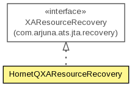

org.hornetq.jms.server.recovery
Class HornetQXAResourceRecovery
java.lang.Object
 org.hornetq.jms.server.recovery.HornetQXAResourceRecovery
org.hornetq.jms.server.recovery.HornetQXAResourceRecovery
- All Implemented Interfaces:
- com.arjuna.ats.jta.recovery.XAResourceRecovery
public class HornetQXAResourceRecovery
- extends Object
- implements com.arjuna.ats.jta.recovery.XAResourceRecovery

A XAResourceRecovery instance that can be used to recover any JMS provider.
In reality only recover, rollback and commit will be called but we still need to be implement all
methods just in case.
To enable this add the following to the jbossts-properties file
you'll need something like this if the HornetQ Server is remote
-->
you'll need something like this if the HornetQ Server is remote and has failover configured-->
-->
- Version:
- $Revision: 1.1 $
- Author:
- Tim Fox, Andy Taylor
HornetQXAResourceRecovery
public HornetQXAResourceRecovery()
initialise
public boolean initialise(String config)
- Specified by:
initialise in interface com.arjuna.ats.jta.recovery.XAResourceRecovery
hasMoreResources
public boolean hasMoreResources()
- Specified by:
hasMoreResources in interface com.arjuna.ats.jta.recovery.XAResourceRecovery
getXAResource
public XAResource getXAResource()
- Specified by:
getXAResource in interface com.arjuna.ats.jta.recovery.XAResourceRecovery
getXAResources
public XAResource[] getXAResources()
finalize
protected void finalize()
- Overrides:
finalize in class Object
Copyright © 2013 JBoss, a division of Red Hat. All Rights Reserved.